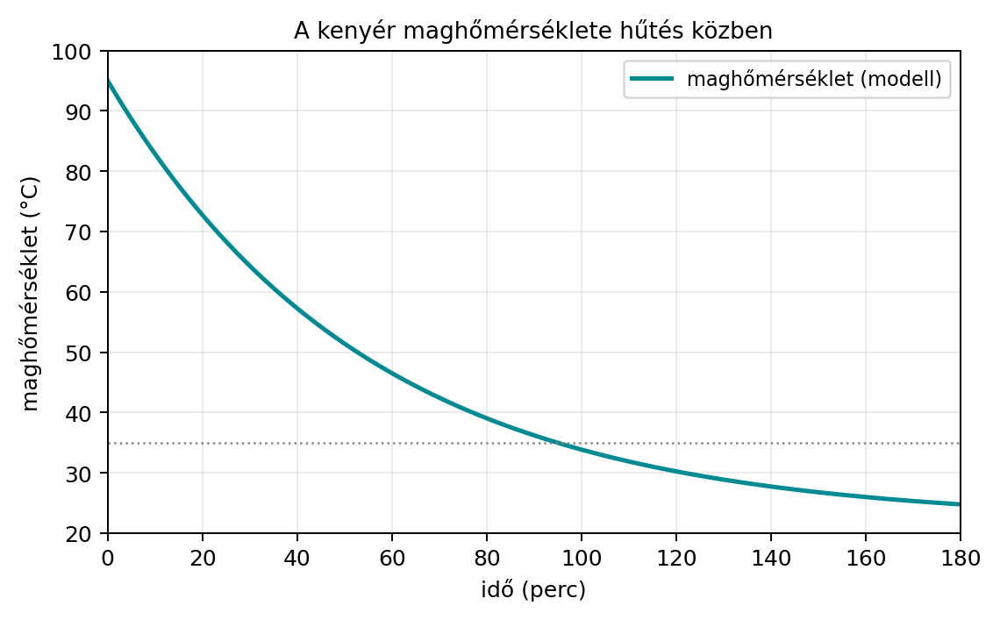
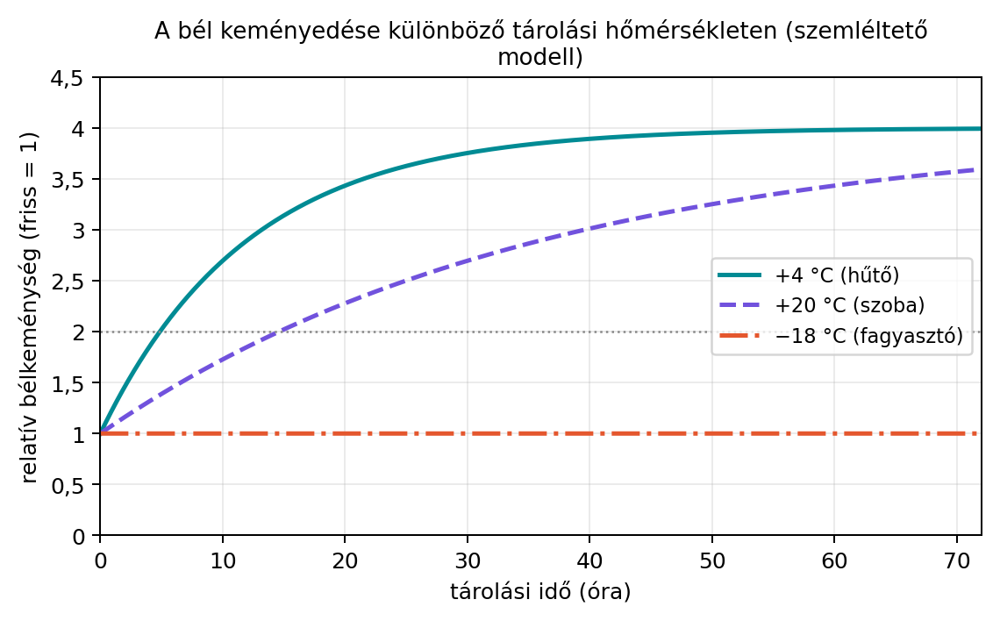

A frissen sült kenyeret nem lehet azonnal zacskóba tenni: a forró bélzet párája kicsapódik a csomagoláson, a kéreg megpuhul, a nedves felület pedig ideális a penésznek. Ugyanez a helyzet a péksüteményekkel és a finom pékárukkal is. A hűtés tehát nem kényelmi lépés, hanem a termékbiztonságot, a minőséget és a csomagolhatóságot együtt meghatározó művelet. Ha a pék jól hűt, a termék hosszabban eltartható, ha rosszul, a legszebb kenyér is bepárásodik, megtörik vagy idő előtt megöregszik.
A hűtés során a termék maghőmérséklete nem egyenletesen, hanem először gyorsan, majd egyre lassabban csökken. Az alábbi görbe egy 1 kg-os, sütőből kivett búzakenyér bélhőmérsékletét mutatja szobahőmérsékleten, enyhe légmozgás mellett, egyszerű (newtoni) lehűlési modellel.

A görbe eleje meredek, mert a forró termék és a környezet közötti hőmérsékletkülönbség nagy, és a felületi nedvesség párolog. Ahogy a termék hűl, a különbség csökken, ezért a hűlés lelassul: a modellben a bél kb. 45 perc alatt 55 °C körülire, kb. 95 perc alatt 35 °C-ra, 150 perc alatt 27 °C körülire hűl. Egy 1 kg-os kenyér bele tehát nagyságrendben 1,5–2,5 óra alatt hűl csomagolható hőmérsékletre (tanulási példa, ellenőrizendő: üzemi mérés), nem néhány tíz perc alatt. A pék ezt úgy érzékeli, hogy a sütőből kivett áru először gyorsan „levegőzik”, majd már lassabban ad le hőt.
Definíció. Hűtés. A sütőiparban a hűtés a sütőből kivett, készre sült termék szabályozott lehűtése a csomagolásra, szeletelésre, töltésre vagy tárolásra alkalmas hőmérsékletre. A cél nemcsak a hőmérséklet csökkentése, hanem a felesleges nedvesség elpárologtatása, a kéreg stabilizálása és a bélzet megszilárdulása.
Definíció. Hűtési veszteség. A hűtési veszteség a sütésből kikerült, még forró termék tömegének az a része, amely a hűtés és tárolás során elpárolog. Szokásos jelölése , mértékegysége tömegszázalék.
A hűtési veszteséget a sütőből kivett, még meleg termék tömegére vetítjük:
ahol
a sütőből kivett, még forró termék tömege,
a hűtés után mért termék tömege.
Megjegyzés. A hűtési veszteség nem azonos a sütési veszteséggel. A sütési veszteség a kemencébe helyezett tészta tömegére vetítve adja meg a sütés közben elpárolgott vizet, a hűtési veszteség pedig a sült, forró termék tömegére vetítve a hűtés közbeni további vízveszteséget. A két érték összeadható, ha mindkettőt ugyanarra az alapra – legtöbbször a feltett tésztára – számoljuk át.
A hűtés gyakorlatilag három szakaszra bontható, bár az átmenetek folyamatosak.
Intenzív párolgási szakasz. A sütőből kivett termék felülete még 90–100 °C közeli, a bélzetből gőz távozik. Ekkor a legnagyobb a tömegveszteség, mert a felületi víz gyorsan elpárolog. A kéreg ekkor még hajlékonyabb, a termék érzékeny a huzatra és a gyors felületi hűlésre.
Mérsékelt hűlési szakasz. A termék hőmérséklete 60–70 °C alá csökken, a párolgás lassul, a hőleadást egyre inkább a környező levegő hőátadása veszi át. A kéreg stabilizálódik, a bélzet szilárdulni kezd.
Kiegyenlítődési szakasz. A termék maghőmérséklete megközelíti a tároló vagy csomagoló tér hőmérsékletét. Ilyenkor a hűtési veszteség már kicsi, de a túl hosszú hűtés tovább szárítja a terméket, ezért a csomagolást nem szabad indokolatlanul halogatni.
Szabály. A hűtés idejét és véghőmérsékletét a termék típusa, tömege, a hűtőtér hőmérséklete, légmozgása és páratartalma, valamint a csomagolás technológiája határozza meg. Tömören: a terméket akkor lehet csomagolni, ha a felülete már nem párás, és a maghőmérséklete elérte a technológiai lapon megadott értéket, jellemzően 25–35 °C körüli tartományt (tanulási példa, termékfüggő: ellenőrizendő az üzemi technológiai lap).
A hűtés helye és módja a termék méretétől, alakjától, a gyártott mennyiségtől és a rendelkezésre álló helytől függ.
Hűtés polcon vagy rácson. A legjobb szellőzést biztosítja, mert a levegő minden oldalról éri a terméket. Kisebb péksütemények, zsömlék, kiflik hűtésére kiváló. Hátránya, hogy sok polcfelületet igényel, és a termékek kiszáradhatnak, ha a légmozgás túl nagy.
Hűtés sütőlemezen. A sütőlemezen hagyott termék alul kevésbé szellőzik, ezért ott párásodhat. Ezért a sütőlemezeket rácson vagy huzatos helyen kell elhelyezni, és a termékeket mielőbb át kell rakni. Különösen igaz ez a vékony, nagy felületű termékekre.
Hűtés konténerben vagy rekeszben. A rekeszes hűtés akkor jó, ha a rekesz alja és oldala szellőzőnyílásokkal ellátott, és a rétegek nincsenek túl szorosan egymáson. Tömegtermelésnél gyakori, mert az áru így mozgatható és tárolható. A túlzsúfolt rekesz gátolja a pára távozását.
Hűtés formában. A kenyérformában sült terméket rövid ideig a formában hagyják, hogy megszilárduljon, majd kiborítják. A forma eltávolításához a terméket óvatosan kell meglazítani, hogy a kéreg ne sérüljön. A formát tisztítás után vissza lehet helyezni a gyártásba.
A négy mód különbsége a levegő útjában van. Az ábra felső sorában a szaggatott nyíl mutatja, honnan éri a levegő a terméket: rácson (1) minden oldalról, sütőlemezen (2) alulról nem, ezért a lemezen pára csapódik le; a szellőzőnyílásos rekeszben (3) a nyílásokon és a hézagokon át; a formában (4) csak felülről, ezért a kenyeret rövid várakozás után kiborítjuk, és rácson hűtjük tovább. Az alsó sor a rácskocsi helyes és hibás megrakását hasonlítja össze.
A hibás kocsin a meleg termékek szorosan, egymásra rakva állnak, és a letakaró fólia bent tartja a párát: a héj megpuhul, és nő a penészedés és a nyúlósodás kockázata (lásd Kenyérbetegségek és a terméköregedés). Ellenőrzési pont: a termékek között maradjon hézag, és a kocsit csak kihűlt áru esetén takarjuk le. A HTML-kiadásban a „Négy mód”, „Helyes” és „Hibás” gomb vált a nézetek között, a módokra mutatva pedig megjelenik a rövid magyarázat.
Higiénia. A hűtőpolcoknak, lemezeknek, rekeszeknek és formáknak tisztának kell lenniük. A szennyezett eszköz közvetlenül érintkezik a sült termékkel, ezért a hűtés során keresztszennyeződés léphet fel. A tisztítás gyakoriságát a pékség takarítási terve és HACCP-rendszere határozza meg (ellenőrizendő: az üzem takarítási ütemterve).
Gépbiztonság. A formák és lemezek forróak, a termékek gőzt adnak le. A kiborításhoz és a sütőből való kivételhez hőálló védőkesztyű szükséges. A polcoknak stabilnak kell lenniük, a sütőlemezeket nem szabad túltölteni, hogy ne boruljanak. A hűtőkocsi mozgatásakor meg kell győződni a kerekek állapotáról és a rakomány rögzítettségéről.
Kiborítás. A kenyérformából sült árut általában még melegen, de nem azonnal kell kiborítani. A túl korai kiborítás a bélzet töréséhez vezethet, a túl késői pedig a formában való bepárásodáshoz. A gyakorlatban a forma enyhe megütögetésével vagy a forma aljának megkopogtatásával ellenőrzik, hogy a termék elvált-e a faltól. Jellemző hőmérséklet-tartomány a kiborításhoz: 60–80 °C (tanulási példa, termék- és formafüggő: ellenőrizendő az üzemi technológiai lap).
A hűtés után a termék a késztermék-tárolóba kerül, ahol a kiszállításig vagy eladásig védett körülmények között vár. A tárolónak száraznak, hűvösnek, szellőztethetőnek, fénytől védettnek és kártevőmentesnek kell lennie.
Hőmérséklet. A kenyér és a legtöbb péksütemény nem igényel hűtőtárolást, inkább 15–22 °C közötti, egyenletes hőmérsékletet. A finom pékáruk, töltött vagy krémes termékek hűtést igényelhetnek, a töltelék mikrobiológiai kockázata miatt. Ilyenkor a hűtőtároló hőmérsékletét a HACCP-terv határozza meg, jellemzően 0–5 °C (tanulási példa: ellenőrizendő: az üzem HACCP-terve és a hatósági útmutató).
Páratartalom. A túl száraz levegő szárítja a héjat, a túl nedves elősegíti a penészedést. A tároló relatív páratartalmát 60–75 % körüli tartományban szokás tartani, de ez termékfüggő (ellenőrizendő: üzemi technológiai lap). A párás fal, a csepegő cső, a fűtetlen zug penészedést indít.
Fény. A közvetlen napfény melegíti a terméket és szárítja a felületet, ezért a tárolóban árnyékolás vagy elfüggönyözés szükséges. A fény a zsiradékban oldódó vitaminokat is károsíthatja, de a sütőipari termékeknél elsősorban a felületi kiszáradás és a hőmérséklet-emelkedés a probléma.
Levegő- és kártevőmentesség. A tároló ajtaját zárva kell tartani, a réseket, szellőzőket rovarhálóval kell ellátni. A raktárban rendszeres takarítást és kártevő-megfigyelést kell végezni. A liszt- és morzsamaradék vonzza a raktári kártevőket.
HACCP. A késztermék-tárolás kritikus pont lehet, ha a termék hűtést igényel (pl. krémes, tojásos, friss töltelékes finom pékáru). Ekkor a hűtőtároló hőmérsékletét folyamatosan mérni és dokumentálni kell. A határérték túllépése esetén a terméket el kell különíteni, és a HACCP-eljárás szerint kell dönteni. A nem hűtött termékeknél a penészedés megelőzése a fő szempont: a terméket addig ne csomagoljuk, amíg felülete nedves, és ne tároljuk párás, zárt helyen.
Allergén. A tárolóban az allergéneket tartalmazó termékeket (pl. diós, szezámmagos, tejes, tojásos; a mák nem tartozik a 14 jelölésköteles allergén közé, de az üzemi allergénterv elkülönítést írhat elő) az adott allergént nem tartalmazó termékektől elkülönítve kell tartani. Kerülni kell a közös rekeszt, a morzsázódó termékek alul legyenek, és az allergénes termékeket le kell fedni. A „mentes” vagy allergénszegény termékeket csak akkor lehet „mentes”-ként jelölni, ha a keresztszennyeződést igazoltan ki tudtuk zárni.
A friss kenyér puha, rugalmas bélzete néhány óra alatt fokozatosan szilárdul, morzsálódóbbá válik. Ezt a folyamatot nevezzük öregedésnek (angolul staling). Az öregedés nem egyszerű kiszáradás, hanem a keményítő molekuláris visszarendeződése.
A sütés során a bélzetben a keményítőszemcsék 60–80 °C-on vizet vesznek fel, megduzzadnak, és a keményítőmolekulák szétszóródnak: ez a csirizesedés. A frissen sült bélzet ezért puha, mert a keményítőláncok rendezetlen, vizet kötő állapotban vannak. A hűlés és a tárolás során azonban a keményítőmolekulák lassan újrarendeződnek, elveszítik a vizet, és részlegesen kristályos szerkezetet alakítanak ki. Ezt a folyamatot keményítő-retrogradációnak nevezzük.
Definíció. Keményítő-retrogradáció. A csirizesedett keményítő amilóz- és amilopektin-láncainak részleges, időben előrehaladó visszarendeződése, amely a bélzet merevebbé, szárazabbá és morzsálódóbbá válásához vezet.
Fontos megfigyelés. A retrogradáció sebessége nem egyszerűen a hőmérséklettel arányos. A legerősebben 0–4 °C közötti hőmérsékleten zajlik, ezért a kenyeret nem szabad hűtőszekrényben tárolni, ha el akarjuk kerülni a gyors öregedést. A gyakorlatban a szobahőmérsékletű tárolás lassítja a retrogradációt a hűtőhöz képest, a fagyasztás pedig gyakorlatilag megállítja.
Ez elsőre ellentmondásnak tűnik, hiszen a mikrobiológiából azt tanultuk, hogy a hideg lassítja a romlást. A retrogradáció azonban nem mikrobiális, hanem fizikai-kémiai folyamat: a keményítőláncok átrendeződése a fagypont feletti hidegben a leggyorsabb, fagyasztva viszont a víz megfagy, és a láncok mozgása gyakorlatilag leáll. Az alábbi szemléltető görbék ugyanannak a kenyérnek a bélkeménységét mutatják három tárolási hőmérsékleten.

A modellben a hűtőben tárolt kenyér bele kb. 5 óra alatt, a szobahőmérsékletű kb. 15 óra alatt éri el a friss kenyér keménységének kétszeresét, a fagyasztott pedig napok múlva is a friss közelében marad. A számok nem mért adatok, de a sorrend (hűtő > szoba > fagyasztó) a gyakorlatban is így alakul: ezért nem tesszük hűtőbe a kenyeret, és ezért fagyasztjuk, ha hosszabb ideig kell eltartani.
A retrogradáció késleltetése több úton lehetséges:
Továbbvitt eredmény. A hűtési veszteség és a retrogradáció itt tanult alapjait használja a Sütőipari hűtés és fagyasztás alfejezet a fagyasztott tészta és késztermék technológiájához, a Kenyérbetegségek és a terméköregedés alfejezet a nyúlósodás és egyéb betegségek elkülönítéséhez, a Finom pékáruk kelesztése, sütése és befejező műveletei, valamint a Tartós kenyerek, kétszersültek, morzsa és babajka az eltarthatósági idő tervezéséhez.
A következő lépések a sütőből kivett termék hűtésére és csomagolás előtti tárolására adnak általánosan használható sorrendet. A konkrét hőmérsékleteket, időket az üzemi technológiai lap helyettesíti (tanulási példák).
Higiénia. A munkatárs tiszta munkaruhát, hajhálót visel, ékszert nem hord. A hűtőeszközök, rekeszek, polcok tiszták, a tároló helyiség rendezett, a kártevő-megfigyelők kihelyezve.
Gépbiztonság. A sütőből kivétel hőálló kesztyűvel történik. A hűtőkocsi kerekeit ellenőrzik, a polcok stabilak. A hűtőberendezés ajtaját óvatosan nyitják, a hideg levegő áramlását nem takarják el.
A hűtött termék minőségi jellemzői:
Túl gyors hűtés huzattal. A pék a forró kenyeret közvetlenül huzat elé teszi, vagy erős ventilátort irányít rá. A felület hirtelen összehúzódik, a kéreg megrepedhet, a bélzet felület alatti része sűrű lesz. Helyes gyakorlat: mérsékelt, egyenletes légmozgás, a terméket fokozatosan hűteni.
Csomagolás túl forró terméken. A 60 °C fölötti maghőmérsékletű kenyér zacskóba téve párát termel, a zacskó belseje kicsapódik, a kéreg megpuhul, és a penész is hamarabb megjelenik. Helyes gyakorlat: a csomagolást csak a megadott maghőmérséklet alatt kezdeni.
Hűtőszekrényben tárolt kenyér. A hűtőszekrény 0–4 °C hőmérséklete a legkedvezőbb a keményítő-retrogradációhoz, ezért a kenyér gyorsan megöregszik. Helyes gyakorlat: a kenyeret szobahőmérsékleten, száraz, fénytől védett helyen tárolni; hosszabb távra fagyasztani.
Allergén keresztszennyeződés a tárolóban. Az allergénes termék (pl. diós, szezámos) a közös rekeszben érintkezik az adott allergént nem tartalmazó termékkel, morzsa hullik rá. Helyes gyakorlat: elkülönített tárolás, lefedés, a rekeszek címkézése, az allergénes termékek alulra helyezése.
A hűtési veszteség elhanyagolása. A pék nem méri a hűtés utáni tömeget, ezért a névleges tömeg és a tényleges tömeg eltérhet, ami hatósági ellenőrzésnél probléma. Helyes gyakorlat: a gyártási naplóban a sütés utáni és a hűtési veszteség utáni tömeget is rögzíteni.
1. feladat (A) Határozd meg a hűtési veszteséget! A sütőből kivett 0,98 kg-os forró kenyér a hűtés után 0,96 kg-ot nyom. Add meg a hűtési veszteséget tömegszázalékban, a sült termék tömegére vetítve!
2. feladat (A) Sorold fel a hűtés során használható tárolóeszközöket, és mindegyiknél nevezz meg egy előnyt vagy hátrányt!
3. feladat (B) Egy pékség 100 darab 0,80 kg-os sütőből kivett kenyeret hűt. A hűtés utáni átlagos tömeg 0,78 kg. Mekkora a teljes tétel hűtési vesztesége kg-ban és százalékban?
4. feladat (B) Rendezd sorrendbe a műveleteket: (a) kiborítás a formából; (b) csomagolás; (c) sütőből kivétel; (d) hűtőrácsra helyezés; (e) maghőmérséklet mérése; (f) hűtött tömeg rögzítése; (g) forró tömeg mérése. Indokold a sorrendet!
5. feladat (C) Egy kenyér külső héja ép, de a bélzet a vágás után gyorsan morzsálódik, és a kenyér már másnap kemény. Milyen hibára utal ez, és milyen technológiai, tárolási beavatkozásokkal lehetne javítani?
6. feladat (D) Az alábbi folyamatábra (szöveges) hibás lépést tartalmaz: „Sütőből kivétel → azonnal zacskóba csomagolás → szobahőmérsékleten tárolás → hűtőszekrénybe helyezés”. Azonosítsd a hibás lépéseket, és írd le a helyes sorrendet az ellenőrzőlista alapján!
1. feladat (A)
A sült, forró tömeg
,
a hűtött tömeg
.
Ellenőrzés: a veszteség 20 g, ami a 0,98 kg-nak körülbelül 2 %-a. ∎
2. feladat (A)
Polc vagy rács: jó szellőzés, sok helyet igényel. Sütőlemez: azonnal
elérhető, alul párásodhat. Konténer/rekesz: jó anyagmozgatás,
túlzsúfolva rossz szellőzés. Forma: megtartja az alakot, de időben ki
kell borítani. ∎
3. feladat (B)
Egy kenyér sült tömege 0,80 kg, hűtött tömege 0,78 kg, a veszteség
darabonként 0,02 kg.
100 darabra:
.
Összes sült tömeg:
.
Százalékos veszteség:
.
Ellenőrzés: a darabonkénti veszteség 0,02/0,80 = 2,5 %, így a tételre is
ugyanaz. ∎
4. feladat (B)
Helyes sorrend: (c) sütőből kivétel → (a) kiborítás a formából (formás
terméknél, rövid pihentetés után) → (g) forró tömeg mérése → (d)
hűtőrácsra helyezés → (e) maghőmérséklet mérése → (f) hűtött tömeg
rögzítése → (b) csomagolás.
Indoklás: a kiborítás a rácsra helyezés előtt történik, hogy a termék
alja ne párásodjon; a forró és a hűtött tömeg együtt adja a hűtési
veszteséget; a mérés a csomagolhatóság ellenőrzéséhez kell, a csomagolás
csak a megfelelő hőmérséklet elérése után következhet. ∎
5. feladat (C)
A tünet (gyors morzsálódás, másnapra keménység) a
keményítő-retrogradáció felgyorsulására utal. Lehetséges ok: alacsony
tésztahőmérséklet, kevés zsiradék, nincs emulgeálószer, túlzott
hűtőszekrény-tárolás, hiányzó csomagolás, magas amilóz-tartalmú liszt.
Javítás: a terméket szobahőmérsékleten tárolni, megfelelő csomagolást
alkalmazni, zsiradék vagy enzimes sütőjavító adagolása a gyártmánylap
szerint, kovászos technológia alkalmazása. ∎
6. feladat (D)
Hibás lépések: „azonnal zacskóba csomagolás” (forró terméken), majd
„hűtőszekrénybe helyezés” (kenyérnél gyors öregedés). Helyes sorrend:
sütőből kivétel hőálló kesztyűvel → rövid várakozás után kiborítás a
formából → hűtőrácsra vagy szellős konténerbe helyezés → hűtés a
megadott maghőmérsékletig → hűtött tömeg mérése és rögzítése →
csomagolás → szobahőmérsékletű, száraz, fénytől védett tárolás. ∎
A sütőből kivett terméket hűteni kell, mielőtt csomagolják vagy tárolják. A hűtés három szakaszban zajlik: intenzív párolgás, mérsékelt hűlés, kiegyenlítődés. A hűtési veszteség a sült, forró termék tömegére vetített elpárolgott víz: . A hűtés történhet polcon, sütőlemezen, szellős konténerben vagy formában; a formából időben ki kell borítani. A késztermék-tároló legyen hűvös, száraz, szellős, fénytől és kártevőktől védett. A kenyér öregedése elsősorban a keményítő-retrogradáció következménye, amely 0–4 °C-on a leggyorsabb, ezért a kenyeret nem szabad hűtőszekrényben tárolni. A retrogradáció késleltethető csomagolással, zsiradékkal, emulgeálószerekkel, enzimekkel, savanyú kovásszal és megfelelő hűtéssel. Továbbvitt eredmény. A hűtési veszteség, a hűtési görbe és a retrogradáció itt tanult összefüggéseit használja a Sütőipari hűtés és fagyasztás, a Kenyérbetegségek és a terméköregedés, a Finom pékáruk kelesztése, sütése és befejező műveletei és a Tartós kenyerek, kétszersültek, morzsa és babajka alfejezet.